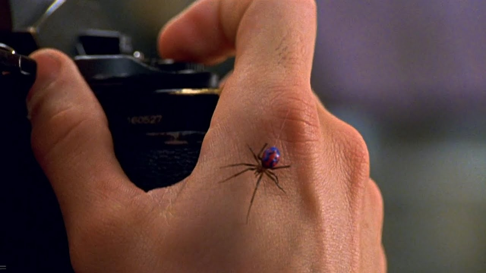
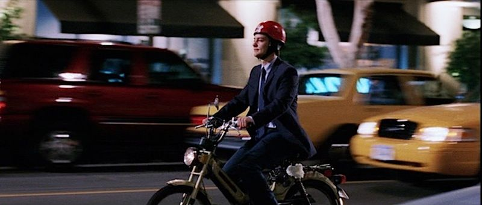

Peter Parker
Spider-man
Comence como fotografo del periódico escolar, donde, realizando un reportaje en la universidad de Columbia, en el laboratorio de genetica, tuve un pequeño accidente en el cual fui mordido por una araña con la que estaban experimentando geneticamente.
Trabaje para el Daily Bugle como fotografo independiente. Alli coincidi con Harry Osborn, una persona que marco mi carrera profesional. Tabajando para el Daily Bugle tomé numerosas fotografias de spider-man, lo que hizo que ganara cierta fama dentro de la fotografia periodistica. Con estas imagenes consegui numerosas portadas en el periodico. Fui asignado para tomar fotografias en la feria de la unidad mundial donde se produjo el brutal ataque del duende verde que fue salvado por spider-man.
Durante un tiempo trabaje como repartidor de pizzas e la pizzeria Joe´s Pizza, considerada una de las mejores pizzerias de Nueva York para mucha gente, entre la que destaca el famoso director Woody Alen. Mi trabajo consistia en repartir pizzas con una motocicleta
